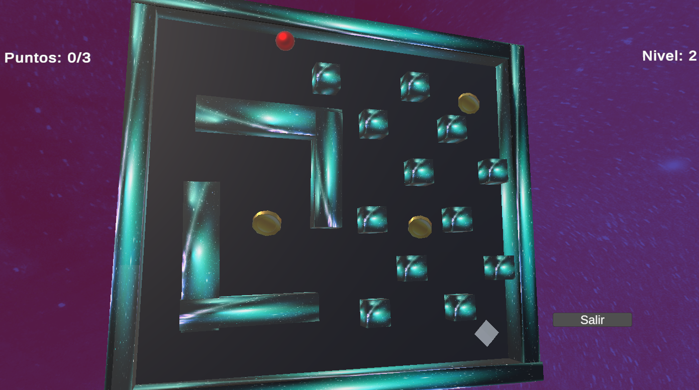
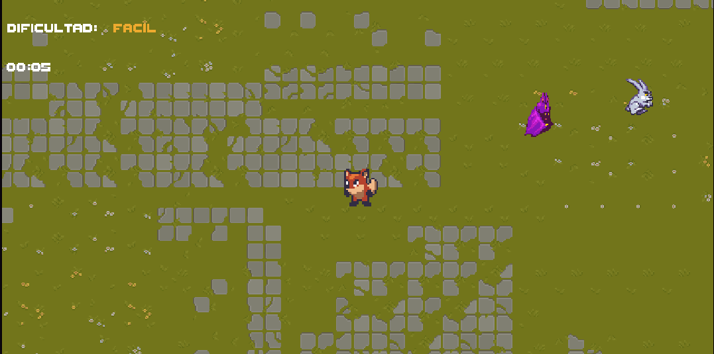
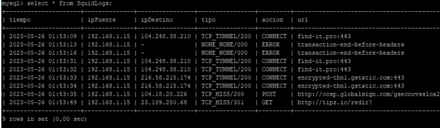
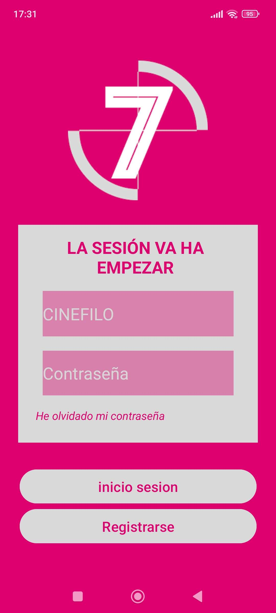

Sobre mí
Recien graduado de DAM (Desarrollo de Aplicaciones Multiplataforma), teniendo tambien el título de ASIR(Administración de Sistemas Informáticos en Red), Y hacinedo actualmente la especialización en IA y Big Data. Soy un entusiasta de la informática y la programación, que aún faltandome experiencia, no me faltan las ganas de trabajar.
Proyectos
Portal 64
Este proyecto es más cercano a un proyecto de Sistemas que a uno de programador ya que yo no lo he desarrollado.
Se basa en crear un cartucho funcional de portal64, que a su vez funione en hardware original (Nintendo 64).
Digo que es un trabajo más de sistemas, porque este juego no lo he programado yo, sino que a través
del uso de distintas herramientas se ha realizado todo.
Se extrajó el juego del github original del creador del proyecto [LINK Github], que se compiló y se cambio de uf2 a z64 para subida al cartucho.
Posteriormente a través de esta otra herramienta que permite pushear
el z64 al cartucho se sube el juego a el Rasberry Pi que hace la función de cartucho del juego.
Se envuelve todo en los elementos habituales de un cartucho de sus caracteristicas: pegatinas, cajas personalizadas, carcasa de cartucho de nintendo 64, etc.
Pompa

Pompa es un juego simple en 3D desarrollado en Unity, y programado en C#, donde la idea es mover el plano para hacer que una pelota llegue a la meta, así como jugarías con el tapon de un pompero.

OneShot Survivor
Juego 2D desarrollado en Unity, cuyo objetivo es sobrevivir cuanto más tiempo se pueda antes de que uno de los enemigos te alcance. Con 3 mapas y un selector de dificultad. Toda la parte visual corre a cuenta de Assets de la store de Unity.

Proxy Trampa
El que fue mi proyecto de final de grado para ASIR. Se basa en un servidor proxy anónimo, montado con Squid, que se conectaría por ti a las páginas web. Pero este guardaba todo el tráfico en base de datos, para luego mostrar mediante gráficas en una página web mediante el uso de php y la librería de jgraphs, para que estaban realmente usando los usuarios el proxy.

D&D Api Java
Trabajo simple que mediante el uso de una API publicada en internet con la información del manual de Dungeons and Dragons, esta aplicación desarrollada en java te permite saber toda la información necesaria relevante a cada clase, para facilitar la información en todo momento para crear una ficha de personaje.
App Cines 7 Infantes

Aplicación de móvil desarrollada en android studio, y usando como lenguaje java. Está aplicación estaría enfocada en los socios de los cines 7 Infantes, para que estos puedan acceder desde el movil a la cartelera actual así como poder ver precios actuales y posibles descuentos o los puntos que llevan acumulados como socios del cine.
